Les cartes de l'Oracle de la Triade
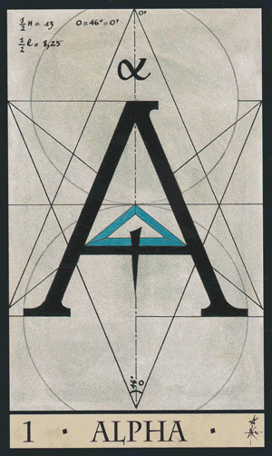
1- Alpha
Il y a du changement dans votre vie. L'Alpha étant la première carte du jeu de l'oracle de la triade, correspondant au mois de janvier, donc au début de l'année, elle indique que quelque chose dans votre vie débute. L'alpha est donc le début d'un cycle, le commencement de quelque chose. Mais il se pourrait bien qu'il y ait de la nouveauté dans votre vie.
Amour : vous débuterez une nouvelle relation, ou bien votre relation actuelle débutera un nouveau cycle.
Travail : soyez prêt à recevoir une évolution ou une promotion. Cette carte représente aussi les professions libérale, les artisans et les indépendants.
Argent : bien que votre situation soit actuellement instable elle évoluera.
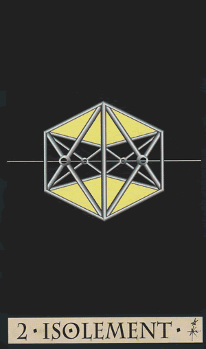
2- Isolement
Une mauvaise période s'annonce. Vous risquez de broyer du noir dans vos tourments. Vous pourriez vous sentir abandonné et vivre une période de solitude. Vous traversez des épreuves difficiles ou vous devrez faire beaucoup d'efforts. Cette carte de l'oracle de la triade correspond au mois de février. Attention toutefois à ne pas céder à la dépression ! Il se pourrait bien que vous soyez contraint de vous soumettre à une personne ou bien à une situation. Un emprisonnement est possible en cas de procès.
Amour : la communication est totalement inexistante et vous vivez mal la solitude. Mais en somme, en y réfléchissant, vous êtes responsable de cette solitude.
Travail : vous stagnez dans votre vie professionnelle, rien n'évolue. L'isolement correspond à la fonction publique et à l'administration.
Argent : vous êtes dans une impasse, dans une situation difficile avec des soucis qui s'aggravent et qui s'accumulent.
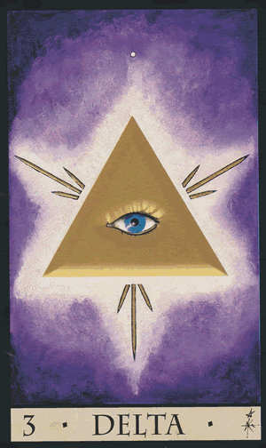
3- Delta
Croyez en vous, croyez en votre intuition ! Vous entrez dans une période de chance ! Votre but sera atteint, quel que soit le domaine concerné. Le delta correspond à mars. Vous êtes doté d'une grande clairvoyance développée et Dieu est à vos côtés pour vous guider.
Amour : c'est ici une courte relation malgré la force et la sincérité de vos sentiments partagés.
Travail : votre emploi et stable et on peut même vous chouchouter. On retrouve ici les métiers religieux et les voyants ou parapsychologues.
Argent : vous réussissez et êtes désormais stable financièrement.
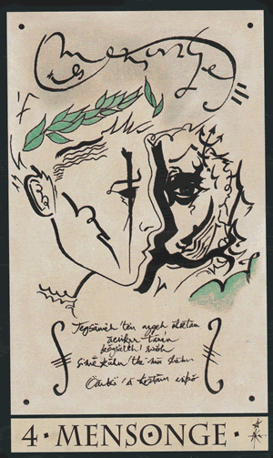
4- Mensonge
Cette carte de l'oracle de la triade vous demande vous méfiez de votre entourage ! Certaines personnes ne sont pas honnête avec vous. On pourrait vous trahir ou vous tromper. Faites du tri dans vos relations, évitez de suivre les conseils des autres. Le mensonge correspond au mois d'avril. Certaines personnes sont fausses et se montrent hypocrites envers vous. Vous pourriez être trahi par l'un de vos proches.
Amour : évitez de vous attacher à la personne, car vous ne vous entendez pas... aussi vos sentiments pourraient ne pas être partagés.
Travail : le mensonge est bien mauvais dans le pro. On vous mène en bateau et il se pourrait que vous subissiez un vol ou bien une arnaque.
Argent : vous pourriez vous surendetter, car votre situation ne s'améliore pas et reste critique. Vous n'avez pas su gérer vos finances correctement. Attention aux chèques en bois !
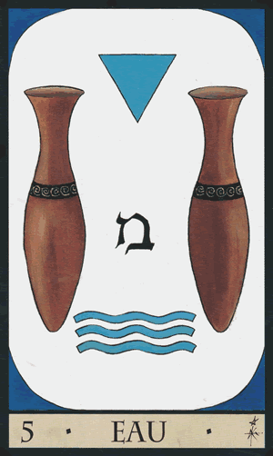
5- Eau
Vous pourrez recevoir l'aide d'une personne et votre situation s'améliorera. L'eau annonce aussi une grossesse ou une femme devrait vous délivrer un message. L'eau correspond en datation au mois de mai. L'eau représente également le pouvoir de création qu'il y a en vous, et la purification que vous devrez faire sur votre lieu de vie et vous-même afin de rendre l'atmosphère et votre corps plus sain.
Amour : votre relation est harmonieuse, la douceur est à l'honneur. Mais la routine risquerait de s'installer. Mettez un peu de piment dans votre couple.
Travail : vous manquez clairement d'ambition. Cette carte de l'oracle de la triade est aussi la carte de l'esthétisme ou de la mode.
Argent : patience, votre situation financière s’améliorera.
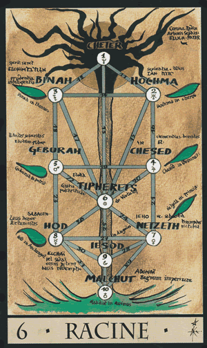
6- Racines
Il s'agit là de votre passé et de votre famille. Une aide proviendra d'une personne, certainement d'une personne revenant dans votre vie. Rassurez-vous, on vous accompagne. Correspond au mois de juin. Vous pourriez tenter de régresser. C'est le bon moment de poser les bases d'un projet ou d'une relation.
Amour : les sentiments que vous avez l'un pour l'autre sont simples bien que maladroits. Mais rassurez-vous ! Ses sentiments pour vous sont sincères.
Travail : on parle ici d'une entreprise familiale. Mais aussi des professions manuelles en lien avec le bois ou la terre.
Argent : vous gérer bien votre portefeuille, même si parfois vous avez tendance à avoir du mal à partager. Il se pourrait bien que vous receviez de l'aide de la part d'un membre de votre famille.
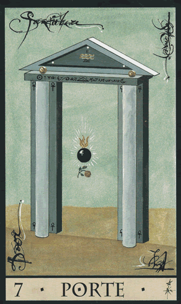
7- Porte
Cette carte de l'oracle de la triade vous dit qu'un cycle se termine, laissant place à de la nouveauté dans votre vie. Laissez vous aller dans le changement, de nouvelles opportunités s'offrent à vous ! Correspond au mois de juillet. N'hésitez pas à découvrir ce que vous réserve la nouvelle porte qui s'ouvre vers une autre voie. Réfléchissez intelligemment, vous trouverez avec clairvoyance l'issue possible à vos soucis.
Amour : vous prendrez un nouveau départ, car vous avez besoin de changements, et que votre situation évolue.
Travail : vous pourriez changer de poste ou recevoir une promotion ou encore débuter un projet. Nous parlons des métiers de l'architecture, du bâtiment et de la construction.
Argent : vous allez franchir un nouveau cycle dans le lequel vous recevrez un petit coup de main supérieur.
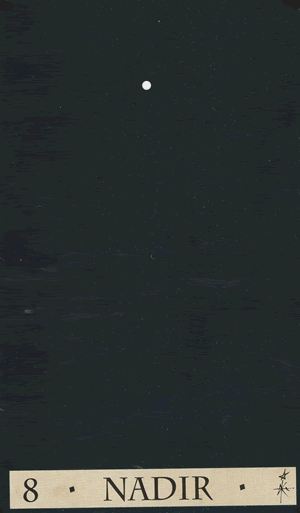
8- Nadir
Vous subirez un isolement que vous vivrez mal. Vous vous sentirez anxieux et dans le mal être. L'épreuve vous est difficile mais vous pourrez mieux la vivre en gardant un état d'esprit positif. Correspond au mois d'août. Vous pourriez perdre certaines choses dans votre vie, entraînant une chute à surmonter. Le nadir peut représenter également l'influence de la magie, ou le mal que vous pourriez subir.
Amour : votre relation est au point mort, vous vous sentez bien seule et la communication est impossible. Effectivement, l'élu de votre coeur est bien distant.
Travail : vous allez connaitre une période de chômage ou vous serez peut être amené à déposer le bilan.
Argent : vos finances sont bien chaotiques, vous êtes au plus bas à cause de vos soucis d'argent.
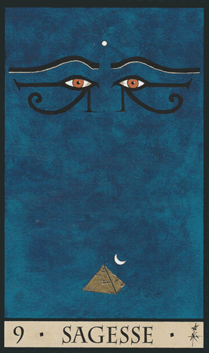
9- Sagesse
Grâce à l'apprentissage de vos erreurs de bonnes nouvelles arrivent ! Votre situation s'améliorera, quel que soit le domaine, car vos efforts seront récompensés. Accueillez dans votre vie stabilité et harmonie. Correspond au mois de septembre. La bienveillance rôde autour de vous, les gens font preuve de bonté et vous pouvez leur faire confiance.
Amour : votre amour est partagé, fort et sincère. Elle avance lentement, mais soyez patiente, car après la lenteur la relation en sortira stable et durable.
Travail : vous évoluez progressivement et vous entendez à merveille avec vos collègues et supérieur. Tout est harmonieux.
Argent : vous ne vivez pas d'artifices, et votre situation est bien équilibrée. Le petit plus ? Cela va encore s'améliorer !
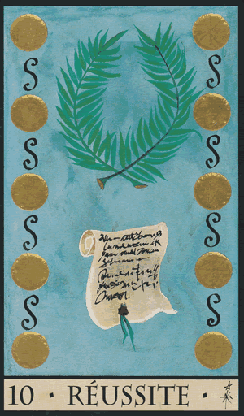
10- Réussite
Voici la meilleure carte du jeu de l'oracle de la triade ! Le succès vous attend ! N'hésitez plus car tout ce que vous entreprendrez sera une véritable réussite ! Alors profitez-en ! Réalisez vos projets ! correspond au mois d'octobre. L'argent coulera à flot, des contrats porteront leurs fruits.
Amour : tous vos souhaits se réaliseront et votre relation n'en est qu'harmonieuse ! Bonne nouvelle pour les célibataires, une nouvelle relation se concrétisera !
Travail : vous pouvez vous lancer dans tout ce que vous voulez ! Tout ne sera que réussite. Vous pourriez signer un nouveau contrat, évoluer, ou bien si vous êtes à votre compte avoir de nouvelles bonnes affaires de conclues.
Argent : vous allez pouvoir obtenir un prêt ou signer un contrat financier. Vos finances sont stables. En cas de soucis financiers vous allez enfin voir le bout du tunnel grâce à des solutions de trouvées.
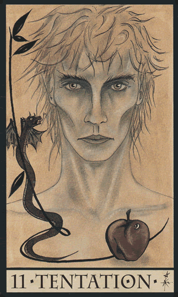
11- Tentation
Vous allez connaître une période bien difficile. Il vous faudra vous montrer prudente. De la jalousie rôde autour de vous et de la tentation viendront gâcher le tableau. Correspond au mois de novembre. La moralité d'une personne de votre entourage est bien douteuse, vous en subirez des préjudices.
Amour : la rivalité est présente si vous êtes célibataire. En couple, votre partenaire n'est pas sincère avec vous, car il vous trompe.
Travail : faites attention à votre entourage professionnel, car une personne est prête à tout pour vous faire tomber.
Argent : faites attention à vos dépenses, elles pourraient vous mettre dans l'embarras.
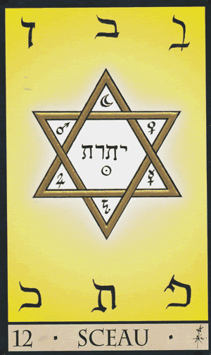
12- Sceau
Cette carte de l'oracle de la triade vous dit que vous pouvez vous lancer, ce que vous entreprendrez se concrétisera. Il y a des signatures de documents. Un nouvel emploi, un contrat financier comme un crédit ou même un bail ou encore une concrétisation de couple par un mariage. Le sceau vous répond "oui" à votre question, car il représente l'acceptation.
Amour : votre relation est sincère, vous vivez une grande histoire d'amour. Tout se concrétise pour les célibataires.
Travail : vous entamez de nouveaux projets et vos projets en cours sont en cours de développement. N'hésitez pas à travailler en groupe, ce ne sera qu'une réussite !
Argent : vous gérez bien vos finances, il n'y a aucun soucis à l'horizon.
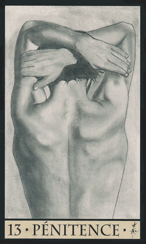
13- Pénitence
De mauvaises nouvelles arrivent annonçant une période difficile. Réfléchissez avant d'agir en gardant des pensées positives ! Ne subissez pas votre situation, rappelez-vous que vous êtes créateur et que vous avez votre propre libre arbitre. On va vous faire payer quelque chose, comme une punition, que vous soyez responsable ou non.
Amour : votre communication est au plus bas, vous ne parvenez plus à communiquer. Vous faites face à une abstinence sexuelle tant qu'il y a des soucis dans votre relation.
Travail : une personne freine le bon déroulement de l'entreprise. Pourquoi pas la seconder et la booster.
Argent : vous avez mal géré vos finances, et cela se voit actuellement. Vous devriez faire moins de dépenses et vous méfier de certaines personnes. Car vous devrez faire face à des soucis financiers difficiles à régler.
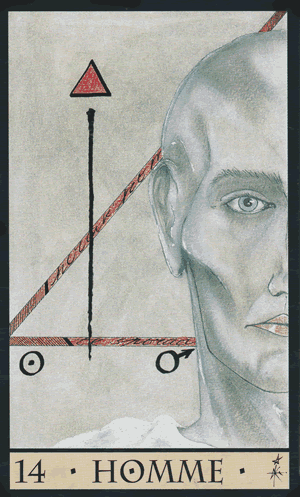
14- Homme
Cette carte de l'oracle de la triade annonce qu'un homme jouera un rôle important dans votre vie dans un avenir proche. Cet homme vous fera avancer et vous aidera à améliorer votre situation. Cette carte peut être le consultant lui-même ou votre partenaire si vous êtes une femme. Cette carte de l'oracle de la triade représente également un homme ou un garçon jouant un rôle important dans votre vie.
Amour : il s'agit là bien de votre moitié si vous êtes une femme. Les sentiments s'amplifient et les liens se consolident. Pour les célibataires il s'agit là du début d'une future relation.
Travail : il s'agit d'un homme jouant un rôle important dans votre vie professionnelle. En s'investissant il pourrait représenter une aide précieuse.
Argent : un homme pourrait vous conseiller dans vos finances. Cela dit, vos finances sont stables. Pourquoi pas un conseiller financier ?
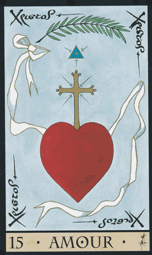
15- Amour
Vous allez vivre des semaines à venir dans l'amour ! Si vous êtes en couple, vous serez durant cette période en parfaite harmonie. Célibataires, vous ferez une belle rencontre dont un beau début de relation en découlera. Il y a beaucoup de tendresse dans votre vie, d'amour, d'attachement et de passion.
Amour : votre relation est harmonieuse avec des sentiments forts et sincères. Une nouvelle rencontre se profile pour les célibataires.
Travail : l'ambiance est chaleureuse, c'est bien normale puisque vous vivez de votre vocation.
Argent : gare à votre insouciance face à l'argent bien que vous n'ayez aucun problème financier.
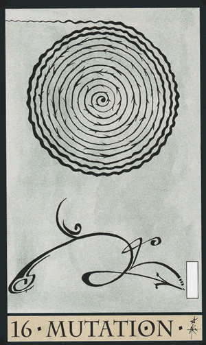
16- Mutation
Du changement aura lieu dans votre vie, mais ce seront des changements positifs, entrainant de belles évolutions. Cependant, attendez-vous à ce que ces changements soient inattendus. Vous pourriez même être amené à déménager. Quoi qu'il arrive, ça ne vous fera que progresser.
Amour : votre relation se retrouve bouleversée par rapport à des doutes sur les sentiments. En effet, rien n'est acquis.
Travail : vous allez changer d'emploi, ou tout simplement de poste. Cela sera positif car vous aurez grâce à ce changement une augmentation de salaire.
Argent : vos finances évoluent grâce à votre changement professionnel.
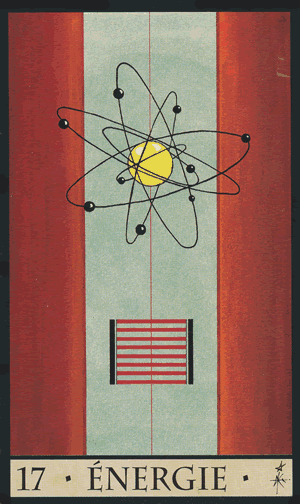
17- Energie
Cette carte de l'oracle de la triade vous dit que vous serez plein d'ambition et de volonté. Vous aurez forcément des sacrifices à faire et de travailler doublement, mais vos objectifs seront atteints. Mais veillez cependant à vous préserver et à ne pas vous épuiser !
Amour : votre partenaire vous prend trop pour acquise, du coup il est peu démonstratif ce qui entraine des tensions dans votre relation. Votre situation sentimentale est bien instable.
Travail : vous avez beaucoup d'ambition et votre motivation est d'ordre financier.
Argent : il y a bien du mouvement dans vos finances ! Comme des transactions, des placements financiers...
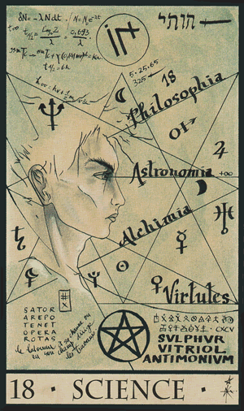
18- Science
Ne vous en faites pas pour votre situation, car elle est bien stable. Toutefois, veillez à ne pas vous montrer trop froid par rapport aux autres. Mais elle représente aussi le monde des mathématiques, une personne bien cartésienne, les sciences mais aussi l'astrologie.
Amour : la relation suit son chemin si vous êtes en couple. Célibataires, une relation se concrétisera lentement.
Travail : votre emploi est stable et durable.
Argent : vous gérez bien vos finances, ce qui vous évite de devoir faire des crédits. Cela dit, vous ne vous pressez pas à concrétiser vos projets, ce qui est bien dommage.
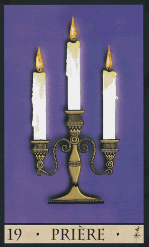
19- Prière
Vos guides vous incite à prier et à vous recueillir. La prière représente le prêtre, l'église ou le temple, tout ce qui est lié à la religion.
Amour : votre amour est un amour inconditionnel, l'amour rêvé et idéal.
Travail : vous pourriez demander une promotion ou bien une augmentation.
Argent : votre situation financière va se stabiliser.
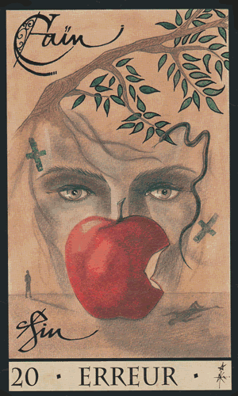
20- Erreur
Vous pourriez commettre des fautes voire des péchés. Il y a des erreurs ayant été commises qui ont engendré vos échecs dans votre vie. Et vous en subissez actuellement les conséquences de ces actes ou paroles.
Amour : vous avez tendance à mal choisir vos partenaires en amour. Vous ne les choisissez pas par amour mais par intérêt ou dépit. Ce n'est pas étonnant que ces relations ne durent pas...
Travail : vous pourriez faire pas mal d'erreurs dans votre travail. C'est normal, puisque vous n'êtes pas sur la bonne voie.
Argent : votre échec financier est dû à une mauvaise gestion.
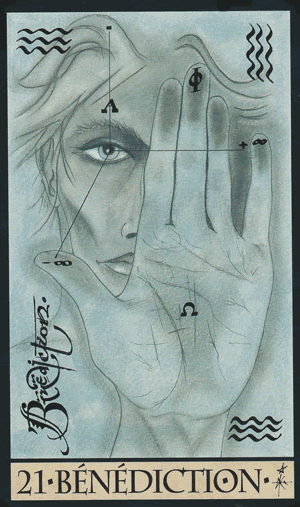
21- Bénédiction
Vous serez invité à une cérémonie, pourquoi pas un baptême ? Vos guides vous informent également que vous êtes béni par les cieux, que vous ne craignez rien. Ayez confiance en vous, en eux, à Dieu, en l'univers et en la vie.
Amour : votre relation basée sur la confiance durera. Pour les célibataires, soyez assuré qu'une relation attend le bon moment pour se présenter à vous.
Travail : vous pourrez percevoir une promotion ou obtenir une évolution.
Argent : vous êtes soutenu par une personne haut placé et stable financièrement avec une excellente réputation.
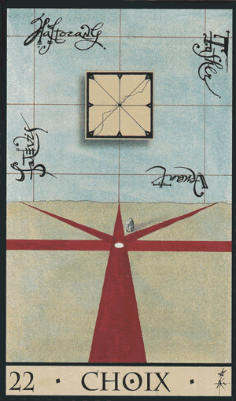
22- Choix
Cette carte de l'oracle de la triade vous dit que vous êtes dans l'indécision, ou bien la personne qui préoccupe vos pensées. Une décision est à prendre et il est grand temps ! Réfléchissez à toutes les possibilités qui s'offrent à vous pour faire le bon choix.
Amour : vous ou votre partenaire hésite grandement à s'engager. Mais l'un d'entre vous peut aussi hésiter entre deux relations.
Travail : pesez le pour et le rencontre avant de prendre une décision professionnelle ou de signer pour un nouvel emploi.
Argent : réfléchissez et faites le choix juste pour vos finances, car votre avenir financier en dépend.
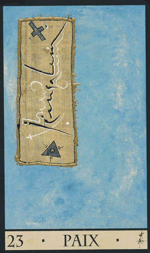
23- Paix
Voilà une période sereine, tranquille et harmonieuse. Ça fait du bien après tout ce que vous avez récemment traversé. Vous serez soulagé et vous sentirez libéré grâce à votre détachement sur ce qui vous préoccupe. Savourez ce calme.
Amour : c'est un amour idéal où règnent confiance et sincérité. Que demander de plus ?
Travail : vous pourriez oeuvrer dans l'humanitaire. Quoi qu'il arrive, vous faites vos choix dans le plus grand calme et cela vous réussit !
Argent : profitez du calme et de la tranquillité financière pour penser à investir votre argent.
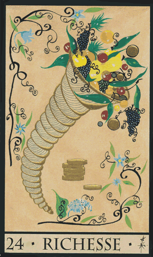
24- Richesse
Vous pouvez vous autoriser les jeux d'argent car la chance est à vos côtés ! L'argent rentre en abondance et vous êtes sur la bonne voie pour faire fortune !
Amour : vos sentiments sont réels et partagés. Toutefois le bémol étant que les relations peuvent être multiples.
Travail : vous débordez d'idées et cela vous le paiera bien car vous recevrez de nombreuses récompenses à vos projets.
Argent : vous accueillez abondance, et celle-ci portera ses fruits quelque soit l'endroit où vous placerez votre argent.
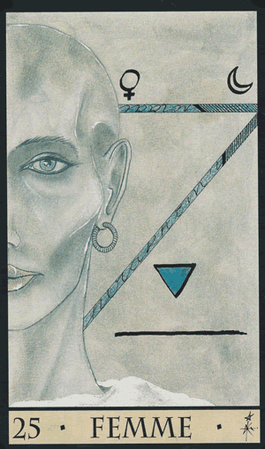
25- Femme
C'est la situation idéale qui se présentera à vous. Réveillez le féminin en vous pour plus d'organisation et de douceur. Cette carte de l'oracle de la triade représente aussi une femme ou une fille qui joue un rôle important dans votre vie ou vous-même si vous êtes une femme.
Amour : l'amour sincère se déclare par des échanges sincères et non pas par la chair. Il peut également s'agir là d'un amour maternel.
Travail : vous avez un bon sens de l'organisation et un bon don pour l'anticipation, ce qui vous vaudra réussite.
Argent : vous pourriez vous montrer un peu dépensière. Vous préférez dépenser plutôt que d'épargner.
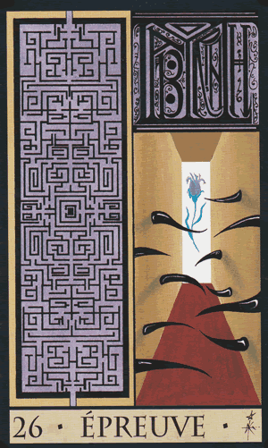
26- Epreuve
Les choses sont retardées par des obstacles qui se sont mis là sur votre chemin. Cela s'est produit de manière imprévue, vous obligeant à agir vite ou bien à subir les embûches. Mais l'épreuve peut être aussi le travail ou bien les examens.
Amour : votre relation est remise en question à cause d'un récent événement, et vous ou bien votre partenaire n'est plus certain de ses sentiments. Célibataires, la solitude vous pèse.
Travail : vous connaîtrez une période difficile, et cela se voit dans votre concentration ou votre capacité à réaliser un bon travail.
Argent : vous devrez faire face à une grosse dépense imprévue qui vous obligera à vous restreindre.
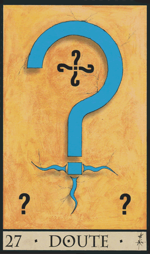
27- Doute
Vous vous posez beaucoup de questions. En effet les choses ne sont pas claires, elles sont plutôt confuses et cela vous déstabilise. Demandez clairement les choses afin d'y voir plus clair.
Amour : les sentiments s'étiolent et vous ou votre partenaire doute des siens, ce qui peut mettre votre relation en danger.
Travail : remettez les choses à plat afin que la situation devienne plus clair. Ainsi, vos doutes s'atténueront.
Argent : faites vous aider pour vos finances.
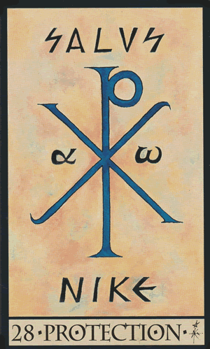
28- Protection
Vous êtes en sécurité ! Vous pouvez trouver de l'aide et du réconfort auprès de quelqu'un qui a un statut supérieur au vôtre. Cette personne vous aidera correctement. A vous de suivre ses conseils que ce soit une personne physique ou spirituelle comme un médium.
Amour : vous êtes protégés de toute attaque ou bien de tout désagrément que vous pourriez rencontrer dans votre vie sentimentale.
Travail : vous êtes bien vu et protégée par votre hiérarchie.
Argent : vous pouvez investir et foncer, vos finances sont sûres et protégées.
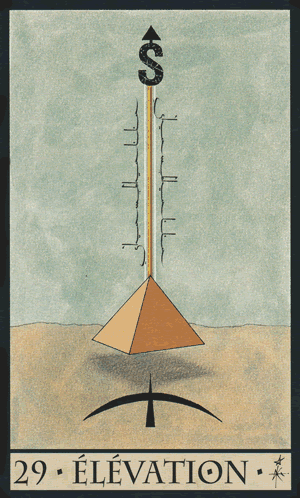
29- Elévation
La période est propice si vous désiré demander une augmentation. Vous pourriez fortement évoluer ou recevoir des avantages, ou bien une situation qui tournerait à votre avantage. La période est chanceuse ! Il se peut également que vous partiez un peu et pourquoi pas à la montagne ?
Amour : les sentiments évoluent et deviennent plus forts, il deviennent inconditionnels. Vous êtes authentiques l'un envers l'autre et complémentaires.
Travail : vous pouvez accepter l'opportunité qui s'offrira à vous en toute confiance.
Argent : votre vie matérielle s'étend encore et encore !
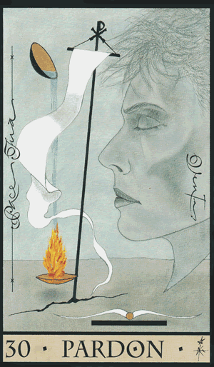
30- Pardon
La période sera calme, vous pourrez enfin vous détendre. Les conflits seront apaisés et pardonnés. Vous vivez en parfait équilibre. Le passé peut resurgir dans votre vie afin de résoudre les conflits pour tourner définitivement la page.
Amour : tout est pardonné, vous avez réussi à pardonner aux autres mais aussi à vous-même et laissez le passé au passé. Désormais, vous pouvez vous investir pleinement dans votre vie sentimentale.
Travail : le pardon est lié aux activités professionnelles du bien-être et de la santé. La bienveillance domine votre vie professionnelle. Ne vous en faites pas si vous avez commis des erreurs, car celles-ci n'ont aucun impact sur votre avenir professionnel.
Argent : vos soucis seront résolu, vous permettant de retrouver votre stabilité financière.
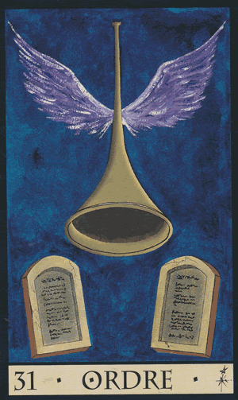
31- Ordre
Cette carte de l'oracle de la triade vous dit que vous allez connaître un certain bouleversement dans votre vie. Pas de panique, celui-ci vous sera bénéfique car il a été dicté par les dieux. Vous pouvez donc suivre cette voie en toute confiance.
Amour : un changement rapide s'annonce. Une nouvelle rencontre pour les célibataires, mais aussi une remise en ordre pour les couples pour consolider votre relation. Pour les infidèles, ils finiront par se stabiliser auprès de leur famille.
Travail : il va falloir vous organiser autrement à l'avenir. D'ailleurs, votre entreprise connaîtra une ré-organisation des rôles inévitables. Cela vous sera bénéfiques car vous pourrez évoluer ou bien même être muté.
Argent : épargne, investissement, ou bien dépense réfléchie... Tout se passe bien et de façon équilibrée.
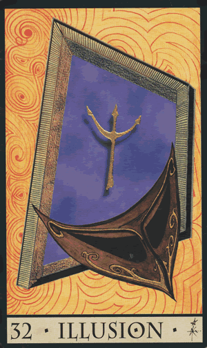
32- Illusion
Il y a quelque chose qui n'est pas clair dans cette situation. Des mensonges d'autrui ou bien ne pas vouloir voir la vérité en face... Quoi qu'il en soit, vous vous trouvez face à une impasse dans laquelle la situation aura du mal à trouver des solutions. Misez sur la communication pour vous faciliter la tâche.
Amour : vous n'êtes pas sur la bonne voie car vos sentiments ne sont pas partagés. Attention, l'illusion peut aussi indiqué de la paranoïa ou de fausses accusations au sein du couple, voire des mensonges ou un faux semblant.
Travail : attention avant de signer un contrat, il y a des vices cachés et des engagements non respectés. Cela s'applique également aux personnes déjà sous contrat, une proposition faite ne sera pas tenue.
Argent : vous devriez mettre vos espoirs de richesse de côté pour l'instant, car vous risquez non seulement d'être déçue mais mettre également vos finances en danger.
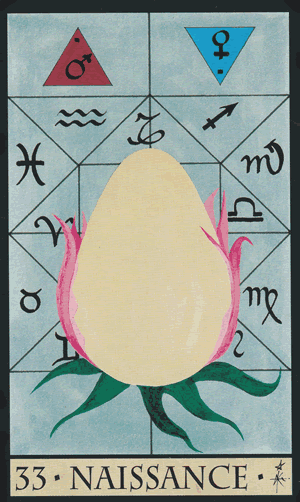
33- Naissance
Pour les femmes tentant de concevoir un enfant, bonne nouvelle, car la période est propice, une grossesse s'annonce. Pour le reste, il s'agit là de la naissance d'un projet ou bien d'un nouveau cycle dans votre vie ou par rapport à votre préoccupation.
Amour : une nouvelle relation s'annonce pour les célibataires. En couple, il s'agit là d'un nouveau projet envisagé à deux qui va prendre forme ou pourquoi pas une grossesse !
Travail : prenez votre temps, le moment sera venu d'être plus simple de vous lancer. Mais vous ne resterez pas dans le poste ou la situation dans lesquels vous êtes. Mais vous vous lancerez dans un nouveau projet.
Argent : vous pourriez bien investir sans le moindre risque, puisque cette nouvelle opportunité qui se présente à vous est sans danger.
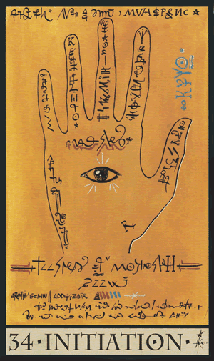
34- Initiation
Cette carte de l'oracle de la triade vous dit que vous possédez de grandes connaissances spirituelles. Pourquoi pas les mettre en pratique au service des autres ? Il y a d'infimes possibilités qui se présentent à vous, faites votre choix !
Amour : ne brûlez aucune étape, prenez votre temps, cela en vaut la peine. Ne vous précipitez pas sur le futur partenaire les célibataires, car il vous faudra plusieurs rendez-vous avant de débuter votre relation. En couple, sachez innover et mettre du piment dans votre relation.
Travail : vous pourriez évoluer, mais pour cela il vous faudra suivre une formation ou bien gagner plus de savoirs. Cela vous permettra d'être reconnu et de voir des nombreuses opportunités s'offrir à vous. L'initiation est lié aux métiers de l'enseignement.
Argent : aucun soucis financier n'est à l'horizon, car vous êtes rigoureux dans vos finances et ne laissez rien au hasard, ce qui vous met à l'abri.
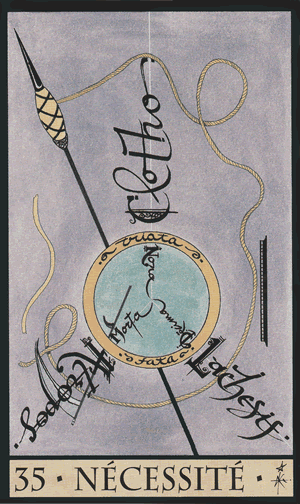
35- Nécessité
Des imprévus entraveront votre vie personnelle. Cependant, vous saurez prendre les choses en main à temps afin de les résoudre. Acceptez ces épreuves avec gratitude, acceptez les changements de votre avenir. Le lâcher prise et l'acceptation est la meilleure solution, car autrement vous risqueriez de faire des mauvais choix pouvant peser lourd sur votre avenir.
Amour : vous craignez de perdre votre partenaire, mais vous ne connaitrez aucune rupture, car il est nécessaire pour vous deux de vivre ensemble. Vous ne pourrez pas vous séparer. Célibataires, vous ne le resterez pas pour bien longtemps. Être avec quelqu'un est une nécessité pour vous, quitte à être mal accompagné.
Travail : vous ne vous épanouissez pas dans votre emploi car cet emploi est considéré comme un emploi alimentaire, c'est-à-dire que cet emploi n'est juste là pour payer vos factures et pour vivre. Cela dit, la nécessité peut également prédire que les obligations de votre emploi vous pèsent et qu'il serait peut-être temps d'envisager à changer d'emploi.
Argent : vous auriez bien du mal à économiser puisque vos revenus sont minimes et ne vous permettent pas d'en profiter.
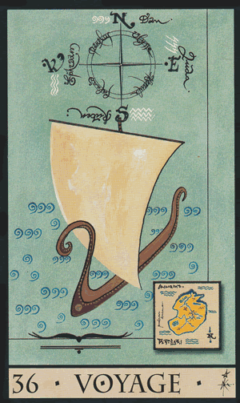
36- Voyage
Cette carte de l'oracle de la triade vous dit qu'un voyage est en prévision et ne vous fera aucun mal bien au contraire, cela peut être également un voyage d'affaires. D'un point de vue plus figuré, le voyage peut annoncer une certaine distance qu'elle soit physique ou non avec la personne concernée, ainsi qu'un manque de communication.
Amour : célibataires, vous pourriez trouver l'amour lors d'un voyage ou un déplacement. En couple, vous ferez un voyage en amoureux.
Travail : vous serez amené à vous déplacer pour le travail, mais aussi à trop vous éparpiller. Le voyage annonce un emploi saisonnier ou dans le tourisme.
Argent : de l'argent sera dépensé lors d'un voyage. Toutefois, il s'agit de dépenses intelligemment pensées.
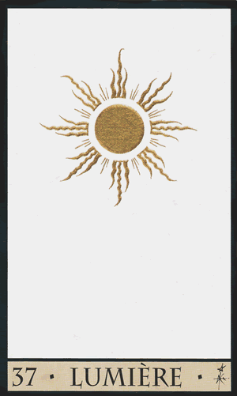
37- Lumière
Vous serez reconnus, vous serez au coeur des discussions. Vous rayonnerez. La lumière mettra au grand jour les choses cachées, ainsi que la véritable personnalité des gens qui vous entourent.
Amour : en couple, l'harmonie entre dans votre relation. Ce n'est que du bonheur ! Pour les célibataires, vous aurez très prochainement un renouveau amoureux !
Travail : vous serez professionnellement mise en avant et sous les projecteurs ! C'est aussi la carte de l'oracle de la triade des artistes, des grands patrons et des hommes politiques.
Argent : ne vous en faites pas pour vos finances, car vous vivrez dans la prospérité, dans la richesse et dans la sécurité.
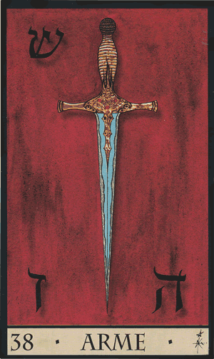
38- Arme
Les disputes sont sans fin, vous pourriez divorcer si vous êtes marié. Mais cette carte de l'oracle de la triade peut vous annoncer un procès ou bien que vous ayez recours à la justice. Cette carte représente également l'autorité, les militaires ou bien une agression ou un crime commis.
Amour : une séparation sera nécessaire un jour ou l'autre... Il y a des pertes de contrôle engendrant de la violence physique et verbale au sein de votre couple.
Travail : attention car on cherche à vous écraser, alors méfiez vous de votre environnement professionnel. Il s'agit également des domaines du public et de la justice.
Argent : vous devrez vous priver pour y arriver financièrement.
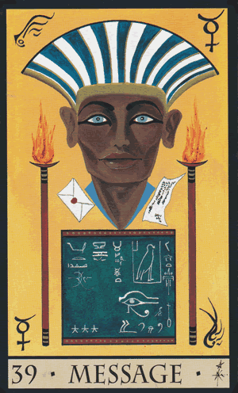
39- Message
Bonne nouvelle d'après cette carte de l'oracle de la triade ! C'est le cas de le dire puisque les nouvelles arrivent ! Des discussions auront lieu et on vous demande de vous montrer à l'écoute pour maintenir la bonne entente.
Amour : de la communication par tous les moyens permet aux célibataires de trouver l'amour. En couple, la communication est fluide et primordiale pour un bon équilibre.
Travail : vous êtes fait pour travailler dans la communication. Vous obtiendrez une réponse favorable si vous avez fait récemment une demande ou pour un nouveau poste.
Argent : l'argent circule librement. Si vous avez fait une demande de prêt, soyez certaine que celui-ci vous sera accordée.
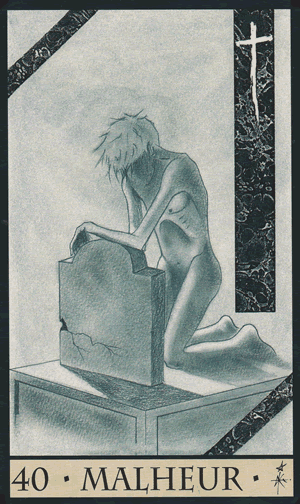
40- Malheur
C'est une fâcheuse période difficile à surmonter. Vous pourriez perdre quelque chose. La souffrance vous guette. N'hésitez pas à vous faire suivre par un professionnel de santé afin de ne pas sombrer dans la dépression.
Amour : les promesses ne sont pas tenues, vous êtes déçu par cette relation qui vous fait souffrir. Les choses ne se présente pas mieux pour les célibataires qui ne voient pas l'amour arriver.
Travail : une fin de contrat approche, principalement pour cause de licenciement.
Argent : vous manquez clairement d'argent, la situation est chaotique.
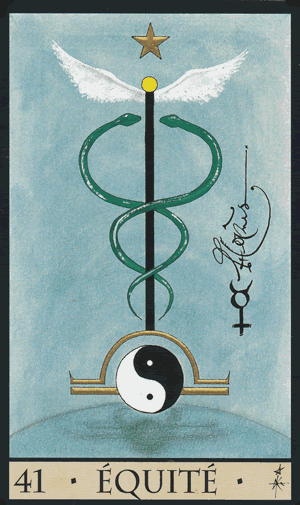
41- Equité
L'équité est la carte de l'oracle de la triade représentant la santé, mais qui annonce également la guérison. Elle est liée à la balance, qui annonce le bon équilibre des choses. Elle est liée au métier de juge d'ailleurs. On vous demande de prendre les mesures avant d'agir afin de maintenir cet équilibre.
Amour : l'amour est partagé, vous êtes en parfait harmonie. Célibataire ? Montrez-vous moins exigeants.
Travail : c'est le secteur médical. Mais l'équité représente également de la stabilité et une harmonie au sein de votre emploi.
Argent : vos finances sont stables bien que vous ne soyez pas bien riche, il n'y a aucun soucis en vue.
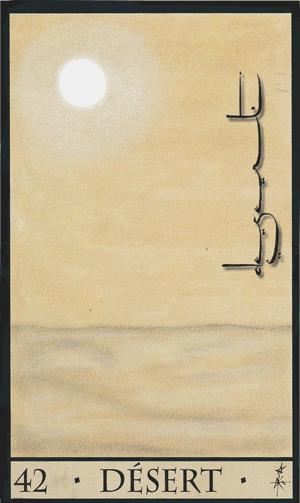
42- Désert
Voilà venir une période où vous vous sentirez seul et un vide s'installera dans votre vie. Vous vous sentirez comme isolé de tout et de tous, seul face à vos problèmes et vos difficultés. Agissez ! Ne restez pas immobile et passif !
Amour : l'amour n'est pas présent dans votre vie, quel que soit votre situation sentimentale, il est absent. Il n'y a plus aucun intérêt entre vous, vous vous considérez comme seuls. Célibataires, vous devez encore bien patienter car il n'y aura pour le moment aucun changement.
Travail : la situation en restera ainsi pour ceux qui ont un emploi. Vous n'évoluerez pas. Pour les sans emploi, préparez vous à pointer auprès de pôle emploi pendant encore un bon moment.
Argent : vous aurez très peu d'argent, voire presque pas.
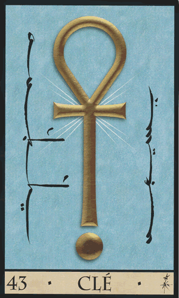
43- Clé
Des solutions viennent à vous pour résoudre vos soucis. La clé ouvre et ferme quelque chose. A vous d'ouvrir la porte devant vous afin d'y découvrir avec bienveillance ce qu'elle a à vous offrir. Car l'avenir qu'elle vous offre vous épanouira.
Amour : vous ferez la rencontre de votre vie les célibataires. Pour les personnes déjà en couple, un renouveau s'annonce dans votre relation.
Travail : au chômage ? Vous trouverez prochainement un emploi. En poste ? Vous pourriez changer d'emploi ou bien acquérir de nouvelles responsabilités.
Argent : c'est le bon moment pour envisager une épargne ou bien même un investissement financier.
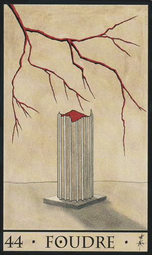
44- Foudre
La foudre annonce des accidents de la vie et le feu, attention, à prendre au sens figuré. Votre vie est plutôt agité entrainent destruction et rupture de quelque chose, vous plongeant dans le chaos. Toutefois, des révélations vous seront faites.
Amour : votre relation, bien que la rupture ne soit jamais envisagée, sera pour un bon moment bien instable. Célibataire, vous pourriez avoir un coup de foudre si la situation n'est pas tendue.
Travail : votre avenir professionnel sera remis en question par un événement fâcheux. Vous pourriez perdre votre emploi du jour au lendemain.
Argent : des imprévus seront à régler urgemment pour rétablir votre situation financière. Mais vous pourriez bien aussi obtenir une belle rentrée d'argent.
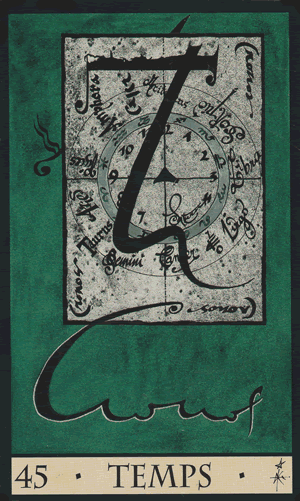
45- Temps
Il s'agit là d'un appel à une datation. Une durée par exemple, une limite de temps, une année précise, une longueur ou une heure. Réfléchissez bien aux événements marquants qui ont pu avoir lieu à un moment précis.
Amour : votre relation est vouée à durer. Mais pour les célibataires, vous mettrez du temps avant de faire une nouvelle rencontre, le temps de vous remettre de votre ancienne relation.
Travail : ne vous tuez pas au travail, pensez également à vous accorder du temps pour vous même.
Argent : vous pourrez épargner sur du long terme.
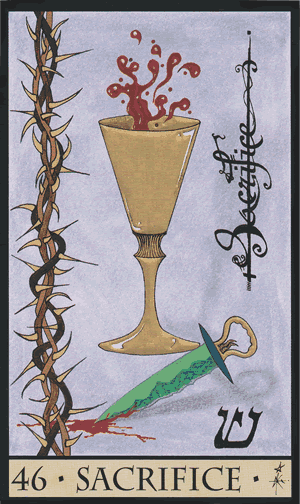
46- Sacrifice
Vous donnez beaucoup de vous-même, ce qui peut vous épuiser. A trop vous soumettre à une personne ou à une situation, vous avez oublié qui vous étiez et même de vous occuper avant tout de vous.
Amour : votre relation n'est pas stable, elle est plutôt même déséquilibrée. Pour les célibataires, il s'agit là d'une ancienne relation qui créer des blocages.
Travail : vous visez trop haut, il faudra revoir vos projets d'emploi. Pour les embauchés, votre travail ne vous paiera pas à la juste valeur de vos efforts fournis.
Argent : des dépenses imprévues surviennent dans votre vie, entraînant des privations.
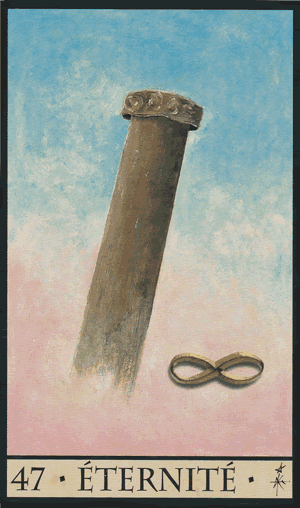
47- Eternité
C'est du solide ! C'est stable et durable ! Des solutions seront trouvés aux conflits, dépassant toutes contradictions. Vous atteindrez la perfection dans vos situations ou dans vos projets à force de persévérance ! Savourez ce côté divin qu'il y a en vous.
Amour : votre relation durera, mais il en est toujours autant pour le célibat des personnes qui n'ont pas encore trouvé leur âme soeur.
Travail : vous pourriez acquérir un poste à responsabilités, sans contrainte d'horaires.
Argent : vous avez les moyens nécessaires pour faire vous-même les opérations sans attendre.
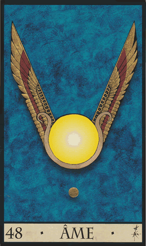
48- Ame
Vous êtes une bonne âme, qui a du coeur et donne beaucoup de vous-même, avec un fort esprit. Votre connexion aux cieux est bien établie, et vous savez rechercher le savoir qui est en vous.
Amour : en couple ? Sachez que vous êtes avec votre âme soeur. Pour les célibataires, vous communiquez avec elle par la pensées, que vous la connaissiez déjà ou non.
Travail : professionnellement, vous ne subissez aucune contrainte. Ainsi vous êtes libre. Vous pourriez également avoir des emplois saisonniers ou temporaires ou encore travailler dans le tourisme, ou encore l'écriture ou l'expression orale.
Argent : l'argent n'est pas un problème. Même si vous n'êtes pas prospère, vos finances sont toutefois équilibrées par votre grand sens de l'organisation.
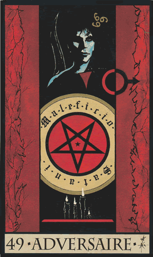
49- Adversaire
Les gens vous jalousent et vous devez faire face à des rivalités qui peuvent vous jouer des tours. Cela vous créer des problèmes et vous devez lutter pour ne pas vous faire marcher dessus. Il se pourrait même que vous soyez menacé. Alors restez prudent.
Amour : votre moitié est également votre ennemi, donc en découlera une séparation difficile suivie de relances et d'attaques violentes.
Travail : ce ne sont que des échecs qui s'accumulent dans votre domaine professionnel.
Argent : votre situation est bien compliquée et par faute, vous vous êtes fait berné par quelqu'un qui vous a laissé tombé après vous avoir ruiné.
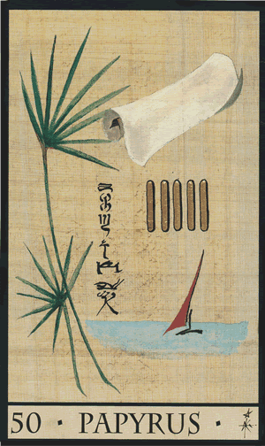
50- Papyrus
Il s'agit là de tout ce qui est lié à l'écriture, lettre, livre, papiers à signer. Mais aussi le commerce ou vos affaires. Quoi qu'il en soit, votre situation va évoluer grâce à l'écriture.
Amour : votre partenaire pourrait être un collègue, le travail vous lie. A moins que l'un d'entre vous ait une relation extra conjugale au travail.
Travail : vous ferez d'avantageux contrats qui vous rapporteront. Tout est fructueux dans le professionnel, quelle que soit votre démarche.
Argent : vos finances ne cesseront pas de s'améliorer.
51- Retour
Quelqu'un ou une situation reviendra dans votre vie. C'est une personne ou une situation de votre récent passé. Mais si vous attendez une réponse de quelque chose, vous la recevrez ! On vous rappellera !
Amour : les célibataires ont du mal à couper les ponts avec leur ancien partenaire. En couples, la routine s'installe. Autrement, le passé fait encore parti de vos pensées.
Travail : la routine est aussi présente dans votre vie professionnelle, ce qui vous empêche clairement d'avancer.
Argent : bien que vos finances fassent le yoyo, elles finissent toujours par retrouver leur équilibre.
52- Silence
Le calme revient dans votre vie, profitez-en pour vous reposer ! Mais il se pourrait que quelque chose ou quelqu'un reste un mystère pour vous. Pas pour longtemps car des révélations vous seront faites.
Amour : célibataire, l'élu de votre coeur vous ignore. En couple, attention à un manque de communication mais aussi à des cachotteries dans votre dos.
Travail : soit votre ambiance professionnelle est stable, soit il y a un sérieux manque de communication.
Argent : l'argent dort car l'argent a besoin de votre manifestation pour entrer dans votre vie. Provoquez les opportunités.
53- Méditation
Réfléchissez sur vos choix, une situation ou votre vie. N'hésitez pas à penser. Vous êtes une personne indépendante, autonome qui n'a besoin de personne. D'ailleurs, vous recherchez beaucoup qui vous êtes au fond de vous et aimez passer des moments seul. C'est bien normal, car vous possédez des dons mystiques.
Amour : vous pensez trop à votre moitié et avez tendance à vous oublier en le faisant trop passé avant vous. Pour les célibataires, réfléchissez bien intelligemment avant de vous lancer.
Travail : vous pensez trop vous investir mais ne vous en faites pas, vos efforts seront récompensés.
Argent : vous ne vous préoccupez pas trop de votre domaine financier. Pourtant, il serait bien de vous y pencher un peu sérieusement pour éviter de probables ennuis futurs.
54- Mort
La mort n'est pas forcément la mort en générale. Elle peut annoncer un changement radical. Toutefois, une personne peut disparaitre soudainement de votre vie et vous devrez en faire le deuil. Le veuvage n'est pas exclu non plus. Mais il peut également s'agir d'une entité faisant appel à vous pour l'aider à passer dans l'au-delà.
Amour : une rupture de relation est envisagée et aura probablement lieu. A moins de changer radicalement, vous ne pourrez plus continuer comme ça. Attention, préparez vous car la rupture peut s'avérer brutale.
Travail : vous prendrez un nouveau départ grâce à un changement professionnel. Pas de panique, ça ne vous sera que favorable dans votre avenir.
Argent : renouez avec l'argent, revoyez votre rapport avec lui. Vous n'en serez que plus heureux, car ce changement vous apportera abondance dans votre vie.
55- Fusion
La fusion annonce une union ! Professionnelle ou sentimentale peu importe, cela sera bénéfique pour vous. Un mariage est possible pour les personnes en couple. Autrement, vous pourriez être invité à un événement telle une réunion, un rassemblement.
Amour : vous vous unirez à votre moitié, par un mariage par exemple. Votre relation sera concrétisée et officialisée, car vous êtes faits l'un pour l'autre. Les difficultés rencontrées seront surmontées. Célibataires, votre prochaine rencontre mènera à une concrétisation d'union.
Travail : vous formez une très belle association, efficace et complémentaire, qui est très favorable pour les affaires. Ensemble, vous pouvez tout réussir.
Argent : vos dépenses sont bien réfléchie, ce qui vous éloigne des difficultés et équilibre vos finances.
56- Frère
Il s'agit là d'un frère, d'un ami, d'une soeur ou de votre partenaire. Dans tous les cas, vous pouvez avoir confiance en cette personne car elle est une personne sûre et intègre.
Amour : il y a de la possession dans votre relation, mais vous n'avez pas le même chemin en tète.
Travail : il y a de la rivalité dans l'air et beaucoup de complications dans vos relations professionnelles. On a tendance à vous jalouser.
Argent : vous ne vous préoccupez que peu de l'argent, sauf quand votre situation se dégrade.
57- Oméga
Les chose vont aboutir, ca y est ! C'est achevé, une nouvelle page va se tourner. Vous avez accomplis les choses jusqu'au bout et il est grand temps d'accepter la fin et de laisser ce que vous avez accompli derrière vous pour vous lancer dans une nouvelle aventure !
Amour : votre relation mènera à une rupture definitiva, vous devrez tourner la page. Mais ça peut être aussi un cycle qui se termine. Pour les célibataires, vous ne le serez plus pour longtemps car votre situation actuelle prendra bientôt fin.
Travail : vous avez fait le tour et aurez envie de changer d'horizon et de buts professionnels.
Argent : vous voudrez mettre fin aux soucis, et chercherez à changer votre situation.